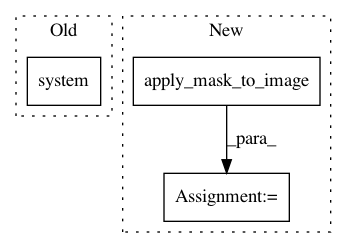

b0f6563b74196ab0f83c54cc315f2efe18b4d05b,pynets/registration/reg_utils.py,,atlas2t1w_align,#Any#Any#Any#Any#Any#Any#Any#Any#Any#Any#Any#Any#Any#Any#,462
Before Change
if diff > gm_fail_tol:
print(f"Grey-Matter mask too restrictive >{str(gm_fail_tol)} for this "
f"parcellation. Falling back to the T1w mask...")
os.system(
f"fslmaths {aligned_atlas_skull} -mas {t1w_brain_mask} "
f"{aligned_atlas_gm}"
)
template_img.uncache()
atlas_img_orig.uncache()
atlas_img.uncache()
atlas_img_corr.uncache()
After Change
if diff > gm_fail_tol:
print(f"Grey-Matter mask too restrictive >{str(gm_fail_tol)} for this "
f"parcellation. Falling back to the T1w mask...")
aligned_atlas_gm = regutils.apply_mask_to_image(aligned_atlas_skull,
t1w_brain_mask,
aligned_atlas_gm)
template_img.uncache()
atlas_img_orig.uncache()
atlas_img.uncache()
In pattern: SUPERPATTERN
Frequency: 3
Non-data size: 3
Instances
Project Name: dPys/PyNets
Commit Name: b0f6563b74196ab0f83c54cc315f2efe18b4d05b
Time: 2020-07-24
Author: dpisner@utexas.edu
File Name: pynets/registration/reg_utils.py
Class Name:
Method Name: atlas2t1w_align
Project Name: dPys/PyNets
Commit Name: b0f6563b74196ab0f83c54cc315f2efe18b4d05b
Time: 2020-07-24
Author: dpisner@utexas.edu
File Name: pynets/registration/reg_utils.py
Class Name:
Method Name: atlas2t1w2dwi_align
Project Name: dPys/PyNets
Commit Name: b0f6563b74196ab0f83c54cc315f2efe18b4d05b
Time: 2020-07-24
Author: dpisner@utexas.edu
File Name: pynets/registration/reg_utils.py
Class Name:
Method Name: gen_mask